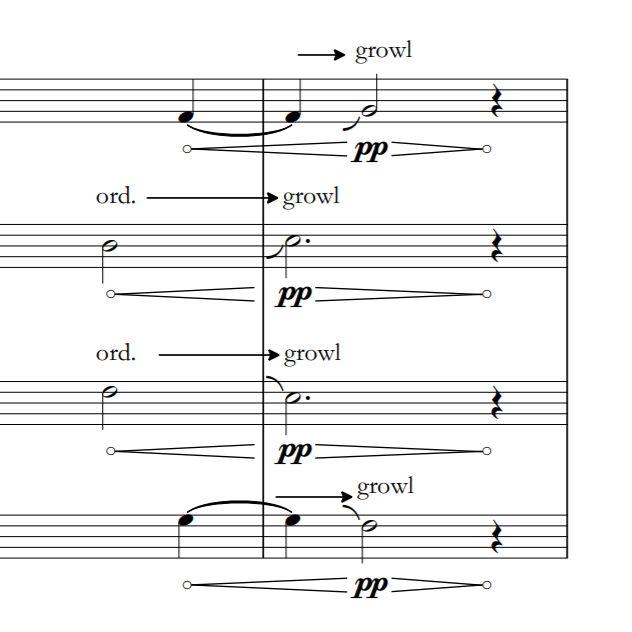
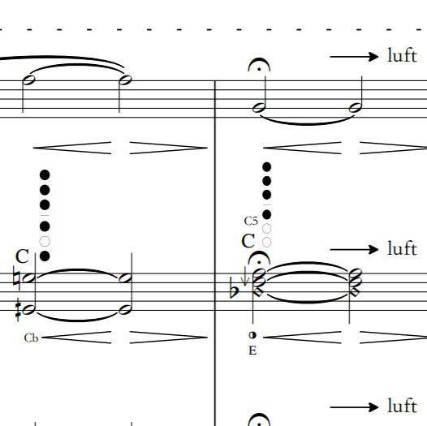
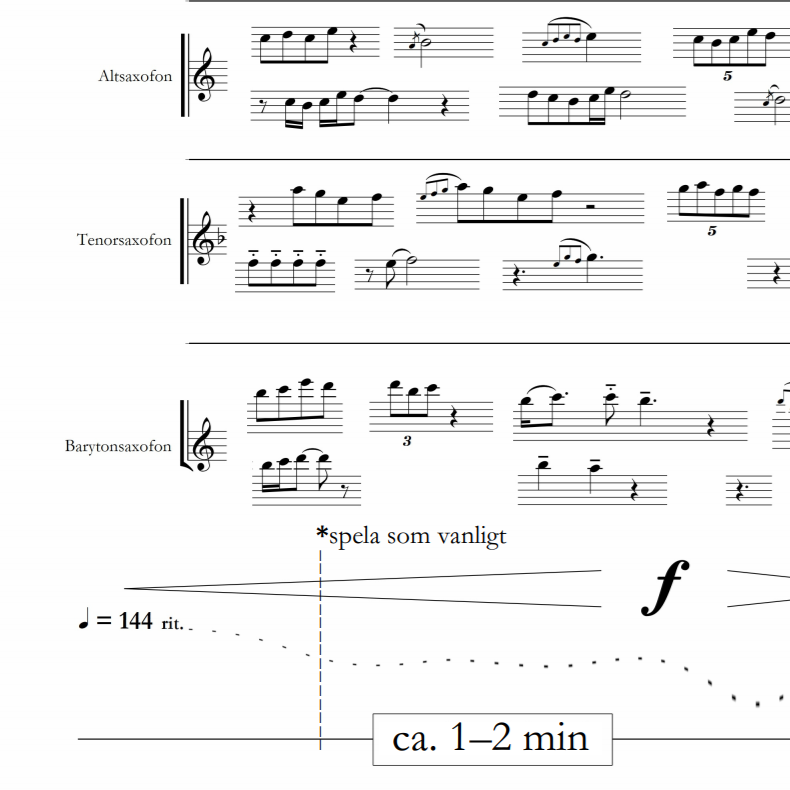
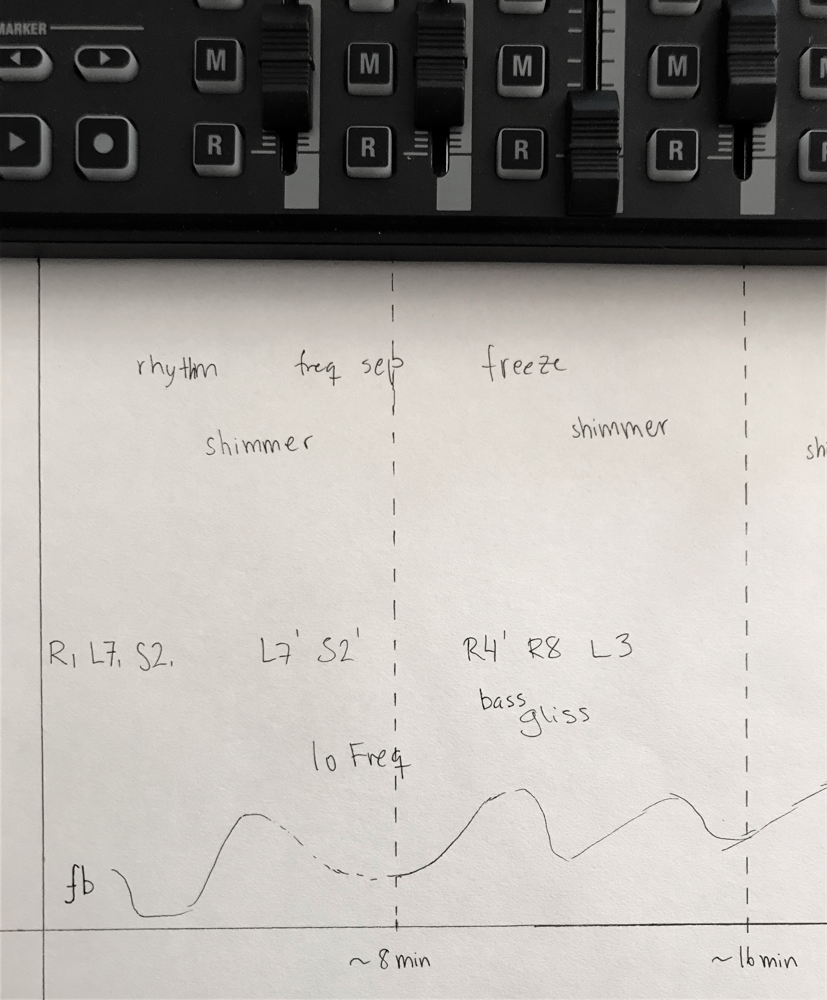
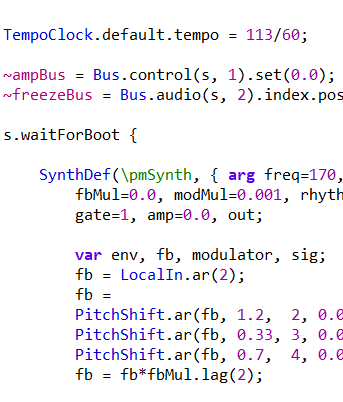

Hettan for Stockholm Saxophone Quartet
In Hettan ("The Heat"), that I wrote for Stockholm Saxophone Quartet, I explore breathing, air sounds, and other soft qualities of the instruments as well as rhythmical discord and ways to notate improvisation that meets certain conditions.
Listen to the premiere performance:
Below are some details from the score.



Recorded live concert
I played a live concert on May 21, 2021 at Fylkingen with material that I have developed during the last few months. I played with a midi controller and all sounds were created in SuperCollider. If you listened to my algorithmic piece on Chronopolis (see below), you will recognize the soundscape.
Listen to the full performance:
Special thanks to Maria W Horn and David Granström for all their help and support, technical and otherwise.


Inert Mass @ Chronopolis/Cashmere Radio
Inert Mass is an algorithmic piece of music that streamed for the entire month of January 2021 (and then never again) on Chronopolis (Cashmere Radio). Read more here.

Artwork by Mikaela Wei.